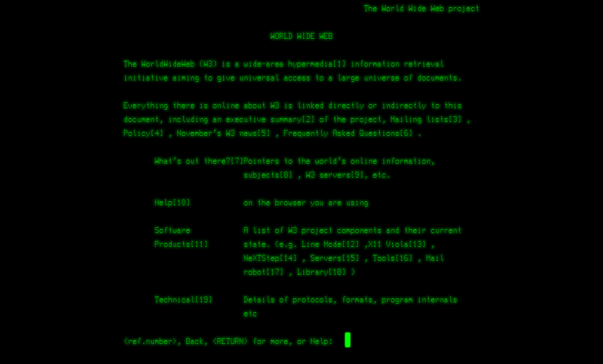
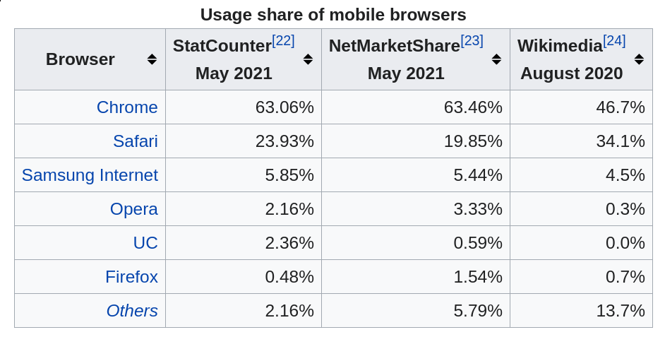
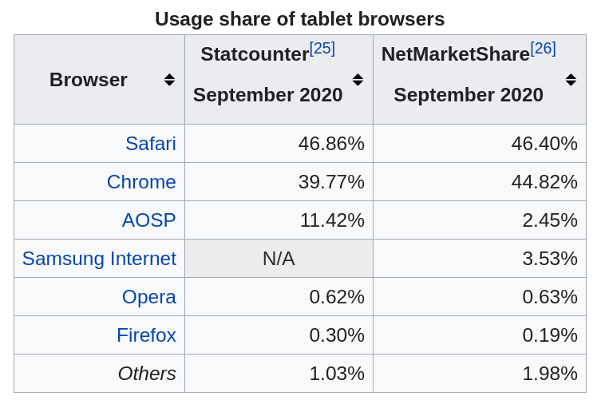
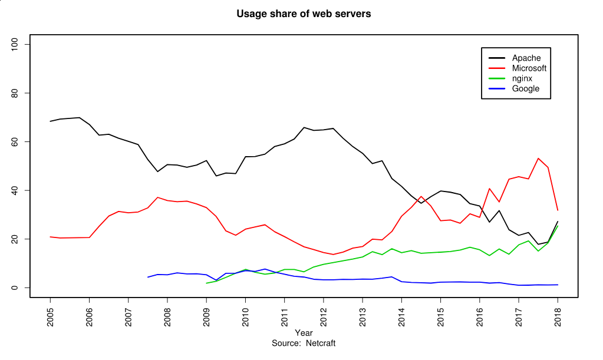

<!doctype html>
<html class="theme-5">
<meta charset="utf-8" />
<link href="../html-slideshow.bundle.min.css" rel="stylesheet" />
<link href="../style.css" rel="stylesheet" />
<script src="https://dbwebb.se/cdn/js/html-slideshow_v1.1.0.bundle.min.js"></script>

<title>Web technologies Introduction</title>

<script data-role="slide" type="text/html" data-markdown class="titlepage center">
# Web technologies
## Introduction
### Mikael Roos
</script>


<script data-role="slide" type="text/html" data-markdown>
# Agenda

* Web technologies
* Server
* Browser
* Protocol
* The document
    * HTML
    * CSS


</script>


<script data-role="slide" data-markdown type="text/html" class="center">
# First web page
<figure>
    
    <figcaption>Textbased hyperlink web page.</figcaption>
</figure>
</script>


<script data-role="slide" type="text/html" data-markdown>
# The birth

* The World Wide Web was invented by British scientist Tim Berners-Lee in 1989 while working at CERN
* The web was originally conceived and developed to meet the demand for automated information-sharing between scientists in universities and institutes around the world.

</script>


<script data-role="slide" data-markdown type="text/html" class="center">
# Tim Berners-Lee
<figure>
    
    <figcaption>Tim at his computer with the "web", back in the days (around 90-95).</figcaption>
</figure>
</script>


<script data-role="slide" data-markdown type="text/html" class="center">
# First website
<figure>
    
    <figcaption>Project to restore the first website ever, info.cern.ch. Reach it at:<br>http://info.cern.ch/hypertext/WWW/TheProject.html</figcaption>
</figure>
</script>


<script data-role="slide" data-markdown type="text/html" class="center">
# First web browser
<figure>
    
    <figcaption>2019 rebuilding of the original NeXT web browser from 1990.</figcaption>
</figure>
</script>


<script data-role="slide" data-markdown type="text/html" class="center">
# Line-mode browser -92
<figure>
    
    <figcaption>First browser with cross-platform codebase.</figcaption>
</figure>
</script>


<script data-role="slide" data-markdown type="text/html" class="center">
# svt.se 1997
<figure>
    
    <figcaption>The Wayback machine has snapshots of early websites, here is svt.se from 1997.</figcaption>
</figure>
</script>


<script data-role="slide" type="text/html" data-markdown class="titlepage center">
# URL
## Uniform Resource Locator
### or "a web address"
</script>


<script data-role="slide" type="text/html" data-markdown>
# URL

* Uniform Resource Locator

```
scheme:[//authority]path[?query][#fragment]

authority = [userinfo@]host[:port]
```

</script>


<script data-role="slide" type="text/html" data-markdown>
# A web address

```
scheme:[//authority]path[?query][#fragment]
authority = [userinfo@]host[:port]

https://www.google.se/
https://www.google.se/search?q=www
```

</script>


<script data-role="slide" type="text/html" data-markdown>
# A web address...

```
scheme:[//authority]path[?query][#fragment]
authority = [userinfo@]host[:port]

https://en.wikipedia.org/
https://en.wikipedia.org/wiki/History_of_the_World_Wide_Web
https://en.wikipedia.org/wiki/History_of_the_World_Wide_Web#public
https://en.wikipedia.org/w/index.php?title=History_of_the_WWW&action=edit&section=3
```

</script>


<script data-role="slide" type="text/html" data-markdown>
# A web address...

```
scheme://server/path?query#fragment
```

* scheme: http or https
* host: antagning.se, svt.se
* path: path to resource or filename, index.html or me-png
* ?query: the querystring with key=value separated by &
    * ?key1=value1&key2=value2
* #fragment: part (id) of the page to show first

</script>


<script data-role="slide" type="text/html" data-markdown class="titlepage center">
# The protocol
## HTTP/HTTPS
### Hypertext Transfer Protocol
</script>


<script data-role="slide" type="text/html" data-markdown>
# Client to server

* Client = Web browser
* Server = Web server
* Client retrieves resource from URL
* Send a HTTP GET request to the server, asking for the specified resource
* Server produces a HTTP response with the resource
* The client receives the response and deals with it

</script>


<script data-role="slide" type="text/html" data-markdown>
# HTTP versions

* 1996: HTTP/1.0
* 1997: HTTP/1.1
* 2015: HTTP/2
    * Used by 45% of the websites and supported by "all" web browsers (2020).
    * "more efficient"
* HTTP/3 proposed development, currently supported by 20% of the websites.

</script>


<script data-role="slide" type="text/html" data-markdown>
# HTTPS

* HTTPS is secure HTTP
* Available since 1994
* Provide the "identity" of the website though certificates
* Let's Encrypt is a free service to get a certificate for your website
* In 2018 Google announced "use HTTPS or drop in the search index"

</script>


<script data-role="slide" type="text/html" data-markdown class="titlepage center">
# The Document
</script>


<script data-role="slide" type="text/html" data-markdown>
# The Document

* HTML for content and hyperlinks
    * HyperText Markup Language
* CSS for style and presentation
    * Cascading Style Sheets
* JavaScript for dynamic client side
* Embedded images, media, realtime communication

</script>


<script data-role="slide" type="text/html" data-markdown>
# A HTML document

```
<!doctype html>
<html>
  <head>
    <title>This is a title</title>
  </head>
  <body>
    <div>
        <p>Hello world!</p>
    </div>
  </body>
</html>
```

</script>


<script data-role="slide" type="text/html" data-markdown>
# HTML standards

* 1999: W3C Recommendation: HTML 4.01
* 2000: W3C Recommendation: XHTML 1.0
* 2008: WHATWG HTML5 First Public Draft
* 2012: WHATWG HTML5 Living Standard
* 2014: W3C Recommendation: HTML5
* 2016: W3C Candidate Recommendation: HTML 5.1
* 2017: W3C Recommendation: HTML5.1 2nd Edition
* 2017: W3C Recommendation: HTML5.2
* 2019: WHATWG HTML Living Standard

</script>


<script data-role="slide" type="text/html" data-markdown>
# A CSS document

HTML

```
<head>
  <link rel="stylesheet" href="style.css">
</head>
```

CSS

```
body {
  background-color: lightblue;
}

p {
  font-family: verdana;
  font-size: 20px;
}
```

</script>


<script data-role="slide" type="text/html" data-markdown>
# CSS standards

* 1996: CSS 1
* 1998: CSS 2
* 2004/2011: CSS 2.1
* CSS 3 (modules)

</script>


<script data-role="slide" type="text/html" data-markdown class="titlepage center">
# Web browsers
</script>


<script data-role="slide" type="text/html" data-markdown>
# Most used browser?

* Which is the most used web browser today?

</script>


<script data-role="slide" data-markdown type="text/html" class="center">
# Most used browser...
<figure>
    
    <figcaption>Marketshare all browsers.</figcaption>
</figure>
</script>


<script data-role="slide" data-markdown type="text/html" class="center">
# Most used browser...
<figure>
    
    <figcaption>Marketshare for desktop browsers.</figcaption>
</figure>
</script>


<script data-role="slide" data-markdown type="text/html" class="center">
# Most used browser...
<figure>
    
    <figcaption>Marketshare for mobile browsers.</figcaption>
</figure>
</script>


<script data-role="slide" data-markdown type="text/html" class="center">
# Most used browser...
<figure>
    
    <figcaption>Marketshare for tablet browsers.</figcaption>
</figure>
</script>


<script data-role="slide" type="text/html" data-markdown class="titlepage center">
# Web servers
</script>


<script data-role="slide" type="text/html" data-markdown>
# Most used web server?

* Which is the most used web server today?

</script>


<script data-role="slide" data-markdown type="text/html" class="center">
# Most used server
<figure>
    
    <figcaption>Historic marketshare for top webservers.</figcaption>
</figure>
</script>


<script data-role="slide" data-markdown type="text/html" class="center">
# Most used server
<figure>
    
    <figcaption>Current marketshare for top webservers.</figcaption>
</figure>
</script>


<script data-role="slide" type="text/html" data-markdown class="titlepage center">
# Resources
</script>


<script data-role="slide" type="text/html" data-markdown>
# Resources

* W3C
* WHATWG
* https://www.w3.org/2009/cheatsheet/
* MDN Mozilla Developers Network
* (W3Schools)

</script>


<script data-role="slide" type="text/html" data-markdown>
# Industry matters

* Web technologies is a broad term to capture some of the technologies involved in building up the "web" and its services
* The document (HTML/CSS), the browser, the server and the protocol is the base
* Web technologies are an important corner stone in the tech industry
* Job offerings wants skilled staff with competence in "web technology"

</script>


<script data-role="slide" type="text/html" data-markdown>
# Research matters

* As an important tech and infrastructure area, its researchable
* Areas for research are for example
    * Performance and optimization
    * Usability
    * Security
* The basic technologies are driven by standardisations

</script>


<script data-role="slide" type="text/html" data-markdown>
# Summary

* Web technologies
    * Address as URL
    * Protocol as HTTP/HTTPS
    * Web browser
    * Web server

</script>


<script data-role="slide" type="text/html" data-markdown class="titlepage center">
# The end
</script>


<script data-role="slide" type="text/html" data-markdown>
</script>

</html>
